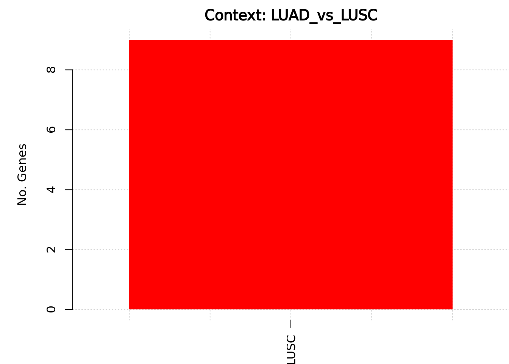

Last updated: 2025-12-31
Checks: 7 0
Knit directory: diffdriver/
This reproducible R Markdown analysis was created with workflowr (version 1.7.1). The Checks tab describes the reproducibility checks that were applied when the results were created. The Past versions tab lists the development history.
Great! Since the R Markdown file has been committed to the Git repository, you know the exact version of the code that produced these results.
Great job! The global environment was empty. Objects defined in the global environment can affect the analysis in your R Markdown file in unknown ways. For reproduciblity it’s best to always run the code in an empty environment.
The command set.seed(20250319) was run prior to running
the code in the R Markdown file. Setting a seed ensures that any results
that rely on randomness, e.g. subsampling or permutations, are
reproducible.
Great job! Recording the operating system, R version, and package versions is critical for reproducibility.
Nice! There were no cached chunks for this analysis, so you can be confident that you successfully produced the results during this run.
Great job! Using relative paths to the files within your workflowr project makes it easier to run your code on other machines.
Great! You are using Git for version control. Tracking code development and connecting the code version to the results is critical for reproducibility.
The results in this page were generated with repository version c29c983. See the Past versions tab to see a history of the changes made to the R Markdown and HTML files.
Note that you need to be careful to ensure that all relevant files for
the analysis have been committed to Git prior to generating the results
(you can use wflow_publish or
wflow_git_commit). workflowr only checks the R Markdown
file, but you know if there are other scripts or data files that it
depends on. Below is the status of the Git repository when the results
were generated:
Ignored files:
Ignored: .RData
Ignored: .Rhistory
Ignored: .Rproj.user/
Untracked files:
Untracked: .Rproj.user.bak_2025-12-29_193924/
Untracked: .write_from_rstudio_test
Untracked: analysis/ApoE_e2.Rmd
Untracked: analysis/ApoE_e2_split.Rmd
Untracked: analysis/ApoE_e4.Rmd
Untracked: analysis/ApoE_e4_split.Rmd
Untracked: code/run_workflowr.R
Unstaged changes:
Deleted: analysis/clinical_newplot.Rmd
Deleted: analysis/example.Rmd
Modified: analysis/immunesubtypes.Rmd
Deleted: analysis/immunesubtypes_newplot.Rmd
Modified: diffdriver.Rproj
Note that any generated files, e.g. HTML, png, CSS, etc., are not included in this status report because it is ok for generated content to have uncommitted changes.
These are the previous versions of the repository in which changes were
made to the R Markdown (analysis/new_task2.Rmd) and HTML
(docs/new_task2.html) files. If you’ve configured a remote
Git repository (see ?wflow_git_remote), click on the
hyperlinks in the table below to view the files as they were in that
past version.
| File | Version | Author | Date | Message |
|---|---|---|---|---|
| Rmd | c29c983 | Qirui Zhang | 2025-12-31 | Add new task pages |
| html | 148c13b | Qirui Zhang | 2025-12-31 | Build site. |
| Rmd | 16fe201 | Qirui Zhang | 2025-12-31 | Add new task pages |
knitr::opts_chunk$set(echo = TRUE)Phenotype: pull samples from both categories, if the sample is TCGA
LUAD, then give the phenotype value 1, otherwise give 0.
Mutation: get the mutations for all samples in the phenotype file, to
form a corresponding mutation file. Mutations for TCGA LUAD:
diffDriver/tumor_specific_input/LUAD/LUAD_mutations.txt. Mutations for
LUSC: /diffDriver/tumor_specific_input/LUSC/LUSC_mutations.txt.
Gene: the union of
/dartfs/rc/lab/S/Szhao/diffDriver/tumor_specific_input/LUAD/LUADgenes.txt
and
/dartfs/rc/lab/S/Szhao/diffDriver/tumor_specific_input/LUSC/LUSCgenes.txt.
This code segment scans through analysis output directories, identifies relevant result files (*_resdd.Rd), extracts corresponding tumor types, immune phenotypes, and analysis modes(sig/reg).
get_files <- function(outputdir, tumors = NULL, phenotypes = NULL) {
files <- list.files(
path = outputdir,
pattern = "_resdd\\.Rd$",
recursive = TRUE,
full.names = TRUE
)
matching_files_txt <- sub("\\.Rd$", ".txt", files)
analysis_mode <- ifelse(grepl("_sig_", basename(files)), "sig", "reg")
inner_folder_names <- basename(dirname(files))
phenotype_folder_names <- basename(dirname(dirname(files)))
tumor_names <- mapply(function(inner_name, phen) {
pattern_front <- paste0("^", phen, "_")
tmp <- sub(pattern_front, "", inner_name)
tmp <- sub("_mutations$", "", tmp)
return(tmp)
}, inner_folder_names, phenotype_folder_names)
phenos_all <- phenotype_folder_names
filedf <- data.frame(
tumor = tumor_names,
phenotype = phenos_all,
mode = analysis_mode,
file = files,
filetxt = matching_files_txt,
stringsAsFactors = FALSE
)
if (!is.null(tumors)) {
filedf <- filedf[filedf$tumor %in% tumors, ]
}
if (!is.null(phenotypes)) {
filedf <- filedf[filedf$phenotype %in% phenotypes, ]
}
rownames(filedf) <- NULL
return(filedf)
}
filedf <- get_files(
outputdir = "/dartfs/rc/lab/S/Szhao/qiruiz/diffdriver/temp/output/LUAD_vs_LUSC/"
)
head(filedf) tumor phenotype mode
1 mut_LUAD_vs_LUSC LUAD_vs_LUSC reg
2 mut_LUAD_vs_LUSC LUAD_vs_LUSC sig
file
1 /dartfs/rc/lab/S/Szhao/qiruiz/diffdriver/temp/output/LUAD_vs_LUSC//LUAD_vs_LUSC/LUAD_vs_LUSC_mut_LUAD_vs_LUSC/task4_reg_LUAD_resdd.Rd
2 /dartfs/rc/lab/S/Szhao/qiruiz/diffdriver/temp/output/LUAD_vs_LUSC//LUAD_vs_LUSC/LUAD_vs_LUSC_mut_LUAD_vs_LUSC/task4_sig_LUAD_resdd.Rd
filetxt
1 /dartfs/rc/lab/S/Szhao/qiruiz/diffdriver/temp/output/LUAD_vs_LUSC//LUAD_vs_LUSC/LUAD_vs_LUSC_mut_LUAD_vs_LUSC/task4_reg_LUAD_resdd.txt
2 /dartfs/rc/lab/S/Szhao/qiruiz/diffdriver/temp/output/LUAD_vs_LUSC//LUAD_vs_LUSC/LUAD_vs_LUSC_mut_LUAD_vs_LUSC/task4_sig_LUAD_resdd.txtThe provided function extracts and compiles results from analyses,
filtering specifically for significant differential genes based on a
threshold (dd.fdr < 0.1).
get_diff_table <- function(filedf){
pheno_all <- unique(filedf$phenotype)
numlist <- list()
for (p in pheno_all){
p_txtfiles <- filedf[filedf$phenotype == p, ]
numlist[[p]] <- list()
for (t in seq_len(nrow(p_txtfiles))){
txtf <- p_txtfiles[t, "filetxt"]
rdf <- p_txtfiles[t, "file"]
tumor <- p_txtfiles[t, "tumor"]
mode <- p_txtfiles[t, "mode"] # reg / sig
env <- new.env()
load(rdf, envir = env)
res_rdata <- env$res
res <- read.table(txtf, header = TRUE)
res$gene <- row.names(res)
res$mode <- mode
res$alpha <- sapply(res$gene, function(gene){
res_rdata[[gene]][["dd"]][["res.alt"]]$alpha[2]
})
sig_res <- res[res$dd.fdr < 0.1, ]
if (nrow(sig_res) > 0){
numlist[[p]][[ paste0(tumor, "_", mode) ]] <- sig_res
}
}
if (length(numlist[[p]]) == 0){
numlist[[p]] <- NULL
}
}
combined_df <- do.call(
rbind,
lapply(names(numlist), function(pheno) {
numlist.pheno <- numlist[[pheno]]
df.pheno <- do.call(rbind, lapply(names(numlist.pheno), function(tname) {
df <- numlist.pheno[[tname]]
df$tumor <- sub("_.*", "", tname)
df$mode <- sub(".*_", "", tname)
return(df)
}))
df.pheno$pheno <- pheno
return(df.pheno)
})
)
return(combined_df)
}
diff_table <- get_diff_table(filedf)library(DT)
diff_table_sig <- subset(diff_table, mode == "sig")
datatable(
diff_table_sig,
extensions = 'Buttons',
options = list(
dom = 'Bfrtip',
buttons = c('copy', 'csv', 'excel', 'pdf', 'print'),
pageLength = 10
)
)diff_table_reg <- subset(diff_table, mode == "reg")
datatable(
diff_table_reg,
extensions = 'Buttons',
options = list(
dom = 'Bfrtip',
buttons = c('copy', 'csv', 'excel', 'pdf', 'print'),
pageLength = 10
)
)The provided function generates bar plots illustrating the number of
significantly differentially expressed genes
(dd.fdr < 0.1) for each tumor type
across different phenotype contexts.
plot_diff_number <- function(filedf, mode = c("all", "reg", "sig")){
mode <- match.arg(mode)
if (mode != "all"){
filedf <- filedf[filedf$mode == mode, ]
}
pheno_all <- unique(filedf$phenotype)
numlist <- list()
for (p in pheno_all){
p_txtfiles <- filedf[filedf$phenotype == p, ]
numlist[[p]] <- list()
for (t in 1:nrow(p_txtfiles)){
txtf <- p_txtfiles[t, "filetxt"]
tumor <- p_txtfiles[t, "tumor"]
res <- read.table(txtf, header = TRUE)
numlist[[p]][[tumor]] <- c(
nrow(res[res$dd.fdr < 0.1,]),
nrow(res) - nrow(res[res$dd.fdr < 0.1,])
)
}
}
par(mfrow = c(length(numlist),1), mar = c(3,5,2,0))
for (phenotype in names(numlist)) {
colors <- rainbow(length(numlist[[phenotype]]))
plot(
NULL,
xlim = c(0.5, length(numlist[[phenotype]]) + 0.5),
ylim = c(0, max(unlist(sapply(numlist[[phenotype]], `[`, 1)))),
xlab = "Tumor Type",
ylab = "No. Genes",
main = paste("Context:", phenotype),
xaxt = "n", bty = 'n'
)
grid()
axis(
1,
at = 1:length(numlist[[phenotype]]),
labels = names(numlist[[phenotype]]),
las = 2
)
for (i in seq_along(numlist[[phenotype]])) {
bar_height <- numlist[[phenotype]][[i]][1]
rect(i - 0.4, 0, i + 0.4, bar_height, col = colors[i], border = NA)
}
}
}plot_diff_number(filedf, mode = "sig")
| Version | Author | Date |
|---|---|---|
| 148c13b | Qirui Zhang | 2025-12-31 |
plot_diff_number(filedf, mode = "reg")
| Version | Author | Date |
|---|---|---|
| 148c13b | Qirui Zhang | 2025-12-31 |
sessionInfo()R version 4.4.2 (2024-10-31)
Platform: x86_64-conda-linux-gnu
Running under: Ubuntu 24.04.1 LTS
Matrix products: default
BLAS/LAPACK: /dartfs-hpc/rc/home/p/f0070pp/.conda/envs/diffdriver/lib/libopenblasp-r0.3.29.so; LAPACK version 3.12.0
locale:
[1] LC_CTYPE=en_US.UTF-8 LC_NUMERIC=C
[3] LC_TIME=en_US.UTF-8 LC_COLLATE=en_US.UTF-8
[5] LC_MONETARY=en_US.UTF-8 LC_MESSAGES=en_US.UTF-8
[7] LC_PAPER=en_US.UTF-8 LC_NAME=C
[9] LC_ADDRESS=C LC_TELEPHONE=C
[11] LC_MEASUREMENT=en_US.UTF-8 LC_IDENTIFICATION=C
time zone: Etc/UTC
tzcode source: system (glibc)
attached base packages:
[1] stats graphics grDevices utils datasets methods base
other attached packages:
[1] DT_0.33 workflowr_1.7.1
loaded via a namespace (and not attached):
[1] Matrix_1.7-3 jsonlite_2.0.0 compiler_4.4.2 promises_1.3.3
[5] Rcpp_1.0.14 stringr_1.5.1 git2r_0.36.2 callr_3.7.6
[9] later_1.4.2 jquerylib_0.1.4 yaml_2.3.10 fastmap_1.2.0
[13] lattice_0.22-7 R6_2.6.1 knitr_1.50 htmlwidgets_1.6.4
[17] tibble_3.2.1 rprojroot_2.0.4 bslib_0.9.0 pillar_1.10.2
[21] diffdriver_0.1.6 rlang_1.1.6 cachem_1.1.0 stringi_1.8.7
[25] httpuv_1.6.16 xfun_0.52 getPass_0.2-4 fs_1.6.6
[29] sass_0.4.10 cli_3.6.5 magrittr_2.0.3 crosstalk_1.2.1
[33] ps_1.9.1 digest_0.6.37 grid_4.4.2 processx_3.8.6
[37] rstudioapi_0.17.1 lifecycle_1.0.4 vctrs_0.6.5 data.table_1.17.4
[41] evaluate_1.0.3 glue_1.8.0 whisker_0.4.1 rmarkdown_2.29
[45] httr_1.4.7 tools_4.4.2 pkgconfig_2.0.3 htmltools_0.5.8.1